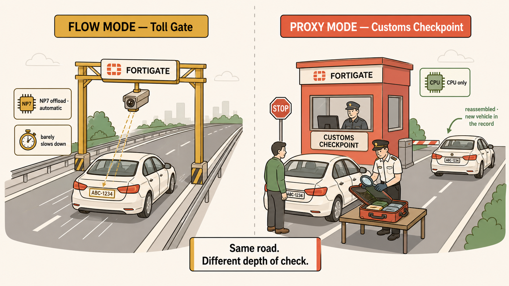

Rapid mental model reactivation — read time 5–8 minutes
One-Paragraph Overview
FortiOS makes one critical decision when the first packet of a connection arrives: it evaluates the matching policy, determines the inspection mode and offload eligibility, and records the verdict in a session table entry. Every subsequent packet follows that recorded verdict — the CPU is not consulted again. If the policy uses a proxy-based profile, FortiOS terminates the connection and creates two CPU-bound session entries. If the policy uses flow-based profiles, the session becomes eligible for NP7 offloading. In FortiOS 7.6 this mode is inferred from the attached profiles, not explicitly configured. VDOMs isolate this session table and policy table per logical firewall instance, ensuring that configuration changes in one zone cannot affect the offload verdict of sessions in another.
Session Setup Decision — First Packet
First Packet Arrives
→
CPU Evaluates Policy
→
Profile Type?
FLOW PROFILES
1 Session Entry
↓
NP7 Offload Eligible
↓
offload=9/9
PROXY PROFILES
2 Session Entries
↓
CPU Only — No NP7
↓
offload=0/0
Verdict recorded at session setup. Never re-evaluated per packet. Policy changes only affect new sessions.
Flow vs Proxy — Key Differences
Characteristic
Flow Mode
Proxy Mode
Connection model
Pass-through (end-to-end)
Terminated + re-established
Session entries
One
Two (client→FGT, FGT→server)
NP7 offload
Eligible
Never — architecturally impossible
CPU cost
Low after offload
High — all packets, both directions
Mode selected by
Inferred from attached profiles
Inferred from attached profiles
VDOMs — Blast Radius Isolation
What Each VDOM Isolates
Policy table — rules cannot bleed between VDOMs
Routing table — route changes stay contained
Session table — verdicts are VDOM-specific
Admin scope — VDOM admins see only their VDOM
Interface assignment — ports belong to one VDOM
Inter-VDOM Link
A virtual point-to-point connection between two VDOMs, entirely internal to the FortiGate. Each end appears to its VDOM as a regular interface — IP address, routing participation, and policy enforcement apply. Traffic crossing the link passes through two independent policy checkpoints.
Global vs VDOM Scope
Configuration Item
Scope
Why
VDOM creation / deletion
Global
Cannot bootstrap from inside a VDOM
Physical interface definitions
Global
Hardware exists before VDOM assignment
Global admin accounts
Global
Must transcend individual VDOM scope
HA configuration
Global
Cluster membership is device-level
Firewall policies
VDOM
Specific to one logical firewall instance
Routing table
VDOM
Each VDOM maintains independent routes
Management VDOM
Global designation
One VDOM designated for mgmt traffic — exactly one
Exam-critical: In FortiOS 7.6, inspection mode is inferred from profile selection — not explicitly configured per policy. An engineer enabling a proxy-requiring profile implicitly disables NP7 offloading for all sessions on that policy. Questions using "regardless of policy configuration" point toward architectural constraints (session helpers, software tunnels) — not configuration decisions.
Common mistakes: (1) Assuming policy changes immediately affect existing sessions — they don't; only new sessions. (2) Assuming a proxy profile only affects the inspection portion — it affects the entire session's processing model. (3) Assuming you can explicitly set flow vs proxy mode in FortiOS 7.6 — you infer it through profile selection. (4) Assuming multiple management VDOMs can exist — exactly one at any time.
Troubleshooting Checklist — offload=0/0
Read no_ofld_reason first — categorise as constraint vs decision before doing anything else
Check session duration — very short sessions may show rsvd before offload evaluation completes
Identify the protocol — does it require a session helper (FTP, SIP, H.323)?
Check ingress interface — is it a software tunnel (GRE, SSL VPN)?
Check policy — is auto-asic-offload disabled?
Review attached profiles — is any profile implicitly forcing proxy mode?
Analogy
Flow mode is a highway toll gate — scans your plate as you drive through, barely slows you down. Proxy mode is a customs checkpoint — you stop, get out, an inspector opens every bag, then you get back in a different car for the rest of the journey. The NP7 can manage the toll gate automatically. It cannot do customs inspections. And once you've been through customs, the record says you arrived in two different vehicles.

Same road, two very different depths of check.
images/analogy-toll-vs-customs.png
Flat minimalistic but highly detailed cartoon illustration, modern vector-art aesthetic, warm colour palette (cream background, coral accents, muted gold highlights, sage greens, soft brown outlines), clean bold line work, no gradients, no photorealism. Split scene divided by a soft vertical dashed line. LEFT half labeled 'FLOW MODE — Toll Gate': a straight highway with a gold overhead gantry, a car passing beneath with a small camera icon reading its number plate, motion lines behind the car, a small badge beside the gantry labeled 'NP7 offload · automatic', and a stopwatch icon marked 'barely slows down'. RIGHT half labeled 'PROXY MODE — Customs Checkpoint': a coral customs booth where a car has stopped, the driver stands outside while an inspector opens luggage on a table with a magnifying glass, and a second identical car waits past the booth linked by an arrow labeled 'reassembled · new vehicle in the record'; a small badge reads 'CPU only'. Between the halves a small centered caption card 'Same road. Different depth of check.' Clean structured composition, generous spacing, educational and visually engaging.
Self-Test — Conceptual Questions
1.A junior engineer adds an IPS profile (flow-based) to a trading VLAN policy. What happens to the NP7 offload eligibility of sessions on that policy?
2.You see offload=0/0 with no_ofld_reason: helper on a session in the trading VDOM. Is this a problem or expected behaviour — and what determines your answer?
3.Vaultline wants to give a new PCI compliance officer admin access to manage only the PCI zone. Without VDOMs, why is this impossible? With VDOMs, how does it become possible?
4.An engineer runs config system interface from the global CLI context. Can they see interfaces assigned to a specific VDOM? Why?
5.A Friday policy change causes trading latency to climb gradually over two hours, then recover quickly after rollback. What does this tell you about how session tables handle policy changes — and what is the mechanism?